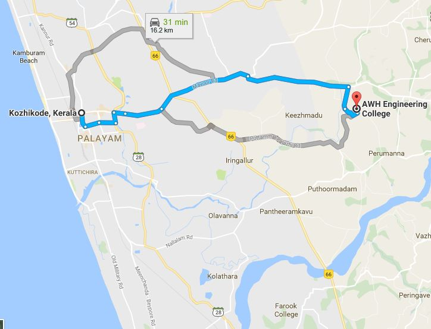

ADDRESS:
AWH Engineering College
Kuttikattor P.O,
Kozhikode,

AWH Engineering College
Kuttikattor P.O,
Kozhikode,
The AWH Engineering College (AWHEC) is situated in Kuttikkattoor,
10 km away from Kozhikode, Kerala. The college started in 2001.
It is a self financing engineering college managed by Association for Welfare of Handicapped (AWH), Kozhikode.
Prayer meeting:Don't have prayer meeting or contacts.
How to reach:Catch Mukkam or Areekkode bus through Mavoor from Palayam Bus stand or from out side New Bus stand. get down at kuttikattoor. Catch bus or Auto to AWH Engineering college.
Possibility:Calicut Medical College,KMCT and NIT can very easily reach out and build contacts.